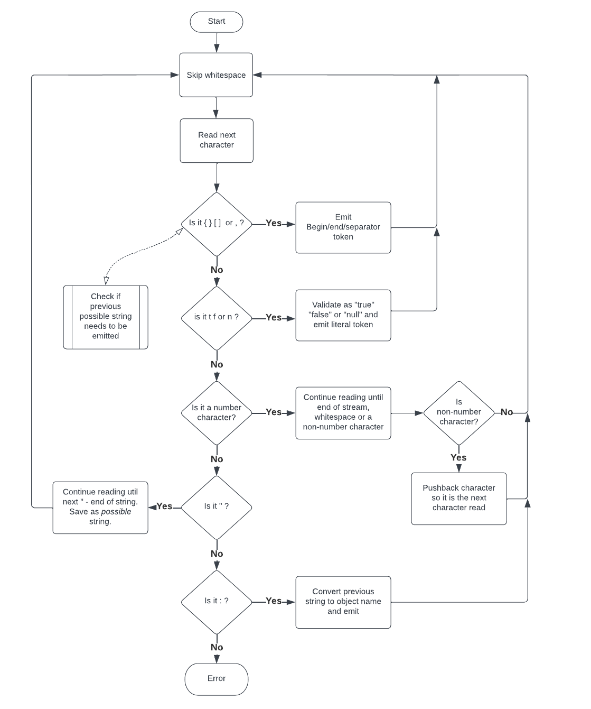

This is part 4 of the Bleeding edge Java series. Start at the introduction if you haven’t already.
Parsing is the process of interpreting free form JSON text and converting it into a stream of JSON tokens. The JSON Spec defines the manner in which parsing should be done: what constitutes whitespace, escape sequences in strings, etc. In short, take a stream of characters and interpret those characters as a stream of JSON tokens.
We can define a Java interface for this:
public interface JsonParser
{
Stream<JsonToken> parse(IntStream stream); // Note: Java Strings can be streamed via the chars() method
}
Instead of a normal Java Stream we need to use an IntStream as we’re dealing
with primitive values: characters. Java does not have a CharStream so
IntStream will suffice.
There are a number of wrinkles we’ll have to deal with when interpreting characters:
- We sometimes need to look ahead before we know what token type is implied (for literals, strings, numbers)
- Our library introduces an object name token. This means that when we parse a
string we need to wait for the next token. If it’s a
:we have to convert the string into an object name. - Number tokens can possibly end with a parseable character:
,[{. When this happens we need to reprocess that character.
Here is the general flow for parsing JSON text:

The code
Java streams process an element at a time and don’t allow arbitrary
forward/backward access. This limitation would make writing a parser very
difficult. Fortunately, a stream can be converted into an
Iterator
which allows the parser to continue accessing characters in the stream as needed. The stream
method iterator() is used to access this iterator whose type has the
unfortunately complex name PrimitiveIterator.OfInt.
Another issue with Java streams is that it’s not simple to generate a stream
with an unknown length. The management of stream ending occurs in the JDK and
there aren’t exposed methods to control this. However, you can easily convert an
Iterator to a stream. Our parser can create an Iterator internally which can
continue to return tokens until parsing is complete and then its hasNext()
method can return false.
Putting this together we need these variables:
PrimitiveIterator.OfInt iterator- the iterator of the character stream being processedLinkedList<JsonToken> tokens- the list of tokens that should be returned from our iterator. We need a list because we will sometimes have more than one token to return.int pushedBack- this is the possibly pushed back character from number parsing or -1
Our parser implementation looks like this:
Stream<JsonToken> parse(IntStream stream)
{
Iterator<JsonToken> tokenIterator = new Iterator<>() {
...
};
return StreamSupport.stream(Spliterators.spliteratorUnknownSize(tokenIterator, 0), false); // standard method of converting an Iterator to a stream
}
The first step in our internal iterator is to prepare our state variables:
private final StringBuilder builder = new StringBuilder(); // contains currently being parsed string, number, etc.
private final PrimitiveIterator.OfInt iterator = stream.iterator(); // stream of characters being processed as an Iterator
private final LinkedList<JsonToken> tokens = new LinkedList<>(); // list of tokens that need to be returned
private int pushedBack = -1; // possibly pushed back character from number parsing or -1
The hasNext()
implementation for our iterator is straightforward:
public boolean hasNext()
{
return !tokens.isEmpty();
}
The majority of the implementation in our iterator will be in the method
advanceToNextToken() which advances to the next token in the stream updating
the state variables in the process. Before we show this let’s show the
implementation for the next()
method of our iterator:
public JsonToken next()
{
if (tokens.isEmpty()) {
throw new RuntimeException();
}
JsonToken result = tokens.removeFirst(); // remove the first token and save it
advanceToNextToken(); // advance
return result; // return the token
}
Now we implement advanceToNextToken(). First let’s advance past any whitespace
unless there’s a pushed-back character:
if (pushedBack < 0) {
pushedBack = advanceWhitespace(iterator); // note: advanceWhitespace() can generate a new pushed-back character
}
Next we loop over characters from the character stream until we have a token.
String possibleObjectName = null; // set when a string is processed
JsonToken nextToken = null;
while ((nextToken == null) && ((pushedBack >= 0) || iterator.hasNext())) {
char c = (char) (((pushedBack >= 0) ? pushedBack : iterator.nextInt()) & 0xffff);
pushedBack = -1;
... process character ...
}
if (possibleObjectName != null) {
// wasn't an object name - we now have to emit this string token first
tokens.add(new StringToken(possibleObjectName));
}
if (nextToken != null) {
tokens.add(nextToken);
}
We only need to process each character - again using enhanced switch:
nextToken = switch (c) {
case '{' -> new BeginObjectToken();
case '}' -> new EndObjectToken();
case '[' -> new BeginArrayToken();
case ']' -> new EndArrayToken();
case ',' -> new ValueSeparatorToken();
case '"' -> {
if (possibleObjectName != null) {
throw new RuntimeException(); // can't have more than one string
}
possibleObjectName = StringUtils.parseString(builder, iterator); // it may be an object name so we have to keep parsing
yield null;
}
case 't' -> parseLiteral(iterator, "rue", new BooleanToken(true)); // see the Java source for details on parseLiteral()
case 'f' -> parseLiteral(iterator, "alse", new BooleanToken(false));
case 'n' -> parseLiteral(iterator, "ull", new NullToken());
case '0', '1', '2', '3', '4', '5', '6', '7', '8', '9', '-', '+', '.', 'e', 'E' -> new NumberToken(StringUtils.parseNumber(builder, c, iterator, i -> pushedBack = i)); // see Java source for details on StringUtils.parseNumber
case ':' -> {
if (possibleObjectName == null) {
throw new RuntimeException(); // illegal state - ':' without a preceeding string
}
ObjectNameToken objectNameToken = new ObjectNameToken(possibleObjectName);
possibleObjectName = null;
yield objectNameToken;
}
default -> {
if (StringUtils.isWhitespace(c)) {
yield null; // ignore whitespace between tokens
}
throw new RuntimeException(); // unexpected character
}
};
See JsonParser.java for the full implementation.
Test it out for yourself!
In the previous articles we developed a serializer and a printer. Now we can reverse the process and take JSON text to produce a stream of JSON tokens. Let’s put this together in jshell. The example use these files:
From a terminal with Java 19 installed, run the following (note you’ll need the wget utility):
wget -nc https://raw.githubusercontent.com/starburstdata/developer-blog-assets/main/bleeding-edge-java/code/TypeToken.java
wget -nc https://raw.githubusercontent.com/starburstdata/developer-blog-assets/main/bleeding-edge-java/code/JsonToken.java
wget -nc https://raw.githubusercontent.com/starburstdata/developer-blog-assets/main/bleeding-edge-java/code/JsonSerializer.java
wget -nc https://raw.githubusercontent.com/starburstdata/developer-blog-assets/main/bleeding-edge-java/code/StringUtils.java
wget -nc https://raw.githubusercontent.com/starburstdata/developer-blog-assets/main/bleeding-edge-java/code/JsonPrinter.java
wget -nc https://raw.githubusercontent.com/starburstdata/developer-blog-assets/main/bleeding-edge-java/code/JsonParser.java
jshell --enable-preview TypeToken.java JsonToken.java JsonSerializer.java StringUtils.java JsonPrinter.java JsonParser.java
Inside jshell let’s serialize a Java record into JSON text and then parse that text back into a stream of JSON tokens:
var serializer = JsonSerializer.instance();
var printer = JsonPrinter.instance();
var parser = JsonParser.instance();
record Person(String name, int age) {}
var person = new Person("someone", 28);
serializer.serialize(person) // serialize to stream of JsonToken
.map(printer::print) // map each JsonToken to a String (as a CharSequence)
.map(CharSequence::chars) // map each CharSequence to an IntStream
.flatMap(parser::parse) // pass each IntStream to the parser and flatten the resulting stream of tokens
.forEach(System.out::println); // print each token to standard out
Summary
We can now serialize a Java record into JSON text and then parse that text back into a stream of JSON tokens. Next up is deserialization.
We’re hiring
Want to be able to use the latest features of Java? We’re hiring!
Jordan Zimmerman is a Senior Software Engineer working on Starburst Galaxy.